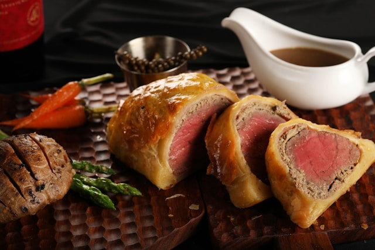

Beef Wellington

Description
Beef Wellington is an elegant British dish made with a tender fillet of beef coated in mushrooms duxelles (a finely chopped mushroom mixture) and wrapped in puff pastry, then baked until golden brown. It's crisp on the outside, juicy on the inside, and perfect for special occasions or Sunday roasts.
Ingredients
Beef
- 1 centre-cut beef fillet, 1kg, trimmed
- 2 tbsp olive oil
- Salt
- Pepper
Mushroom Duxelles
- 500g chestnut mushrooms, very finely chopped
- 2 tbsp unsalted butter
- 1 shallot, finely chopped
- 2 garlic cloves, crushed
- 2 tsp fresh thyme leaves
- Salt
- Pepper
Assembly
- 6-8 slices of prosciutto or parma ham
- 1 sheet ready-rolled puff pastry (about 320g)
- 1 egg, beaten
- Plain flour
Steps
Beef
- Pat the beef dry and season generously with salt and pepper.
- Heat the olive oil in a large frying pan with salt and pepper
- Sear the beef all over (including the ends) for about 1-2 minutes per side, until browned.
- Remove from the pan, brush wtih English mustard, and leave to cool.
Mushroom Duxelles
- In the same pan, melt the butter and add the shallot and garlic. Cook gently until softened.
- Add the finely chopped mushrooms and thyme.
- Cook over medium heat for 10-15 minutes, stirring often, until all the moisture has evaporated and the mixture is dry and paste-like.
- Season with salt and pepper, then cool completely.
Beef Wellington
- Lay a large sheet of cling film on a work surface.
- Arrange the prosciutto slices slightly overlapping on the film to form a rectangle.
- Spread the mushroom duxelles evenly over the prosciutto.
- Place the seared beef on top, then use the cling film to roll it up tightly into a log.
- Twist the ends of the film to seal and chill in the fridge for 30 minutes to firm up.
- Preheat the oven to 200*C/Gas Mark 6.
- Roll out the puff pastry on a lightly floured surface.
- Unwrap the beef from the cling film and place it in the centre of the pastry.
- Brush the edges with beaten egg, then fold the pastry over to enclose the beef completely.
- Trim any excess pastry and seal the edges well.
- Brush the outside with more egg wash, then chill again for 15 minutes.
- Transfer to a baking tray lined with baking paper.
- Use a knife to lightly score a decorative pattern on the pastry.
- Brush once with egg wash.
- Bake for 40-45 minutes for medium-rare, or 50 minutes for medium.
- Allow to rest for 10 minutes before slicing.